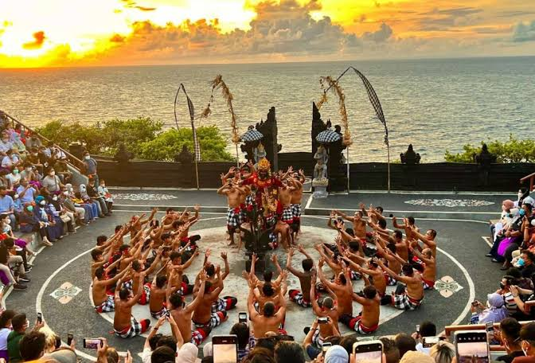

Pengenalan Pulau
Dewata
Eksplorasi
Bali
Eksplorasi
Bali
Secara Menyeluruh
Secara geografis dan kultural, Bali merupakan pusat simfoni keindahan nusantara. Terletak di antara Pulau Jawa dan Lombok, pulau ini membagi keajaibannya melalui lanskap pegunungan vulkanik yang megah, terasering sawah yang hijau, hingga garis pantai yang memukau.
Setiap jengkal tanah di Bali dibangun atas dasar keselarasan. Melalui halaman edukasi interaktif ini, kamu akan dibawa melintasi visualisasi autentik dan arsip kebudayaan yang mencakup seluruh elemen identitas Bali dari masa ke masa.
📍 Telusuri Klaster Modul Di Bawah Ini


